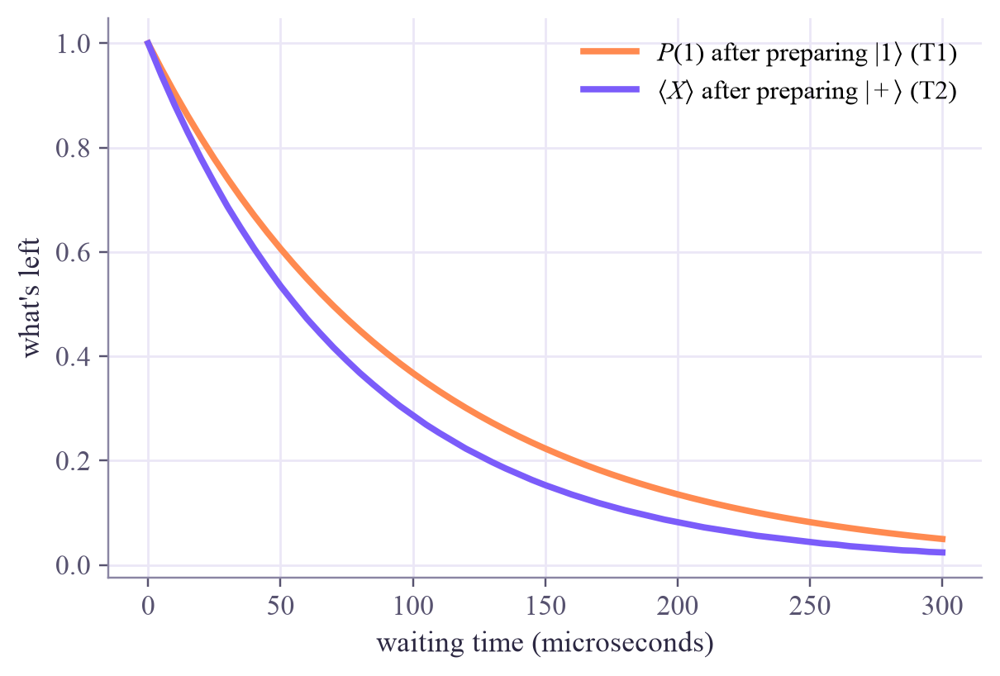
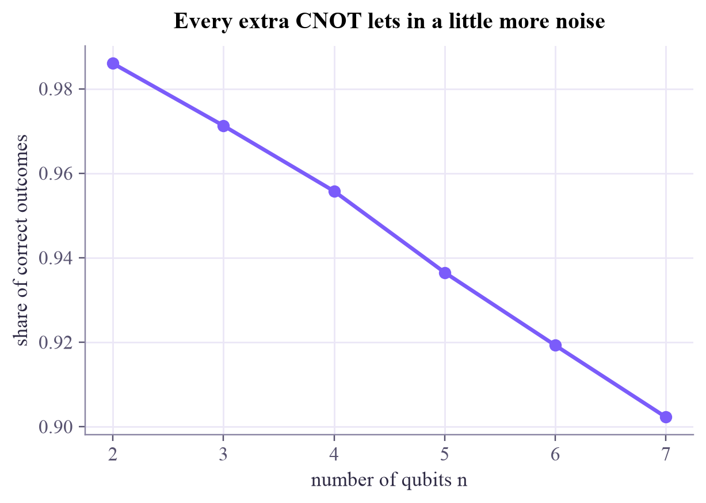

|+> (pure) probabilities of 0 and 1: [0.5 0.5] Bloch vector: [1.0, 0.0, 0.0] I/2 (mixed) probabilities of 0 and 1: [0.5 0.5] Bloch vector: [0.0, 0.0, 0.0]
Quantum Computing
 about 12 min
about 12 min qc-w6d1.ipynb
qc-w6d1.ipynb
Noise and mixed states
Real qubits fade: their arrows shrink inside the Bloch sphere. Meet three kinds of noise, the times T1 and T2, and a noisy simulator.
In this lesson you will
- Describe a mixed state as a Bloch arrow shorter than 1
- See how depolarizing, dephasing and amplitude damping move the arrow, and connect them to T1 and T2
- Simulate noisy circuits with Qiskit Aer, and see errors pile up with circuit size
Warm-up
1 minA photo fading in the sun

Leave a photo in the sun and it slowly fades towards a blank gray. Qubits do the same: their environment keeps "peeking" at them, and the delicate phases and amplitudes wash out. This is called noise or decoherence, and it is the main enemy of today's quantum computers. This week is about living with it: describing it, measuring it, and fighting back.
Big idea
5 minMixed states live inside the sphere
So far every state was pure: a definite , an arrow of length 1. If we only know the qubit is in with probability , or with probability , we need a density matrix:
The second form shows that every one-qubit state is still a Bloch vector , but now . Pure states sit on the surface; mixed states sit inside the Bloch ball. The center is a totally random coin: you know nothing.
Noise moves the arrow inwards. Three classics:
- Depolarizing: with probability the state is replaced by . The arrow shrinks evenly: .
- Dephasing: the phase is scrambled. The and parts shrink, is untouched: the ball squashes towards the vertical axis.
- Amplitude damping: energy leaks away and decays to . Everything slides towards the north pole.
Noise takes time. On hardware these processes run continuously. Amplitude damping has a time constant : a qubit left in is still there after time with probability . Dephasing has a time constant : the arrow's sideways parts fade like . For today's superconducting qubits both are typically around a hundred microseconds, while a two-qubit gate takes a fraction of a microsecond: room for hundreds of gates, not millions. Every extra gate lets in a little more noise.
How far did a state drift? Wednesday's lesson measures that properly, with fidelity and trace distance; today's widget already shows both numbers.
Noise shrinks the Bloch arrow: evenly (depolarizing), sideways only (dephasing), or towards (amplitude damping), a little more with every gate and every microsecond.
Play
4 minFade a qubit
Choose a noise type and turn up its strength. The faint arrow is the clean state, the bold one the noisy state; the dashed line between their tips is twice the trace distance.
Try this
Start on the equator () and choose dephasing: the arrow collapses straight into the center. Now start at the north pole: dephasing does nothing at all. Then try amplitude damping from the south pole and watch decay towards .
Code
3 minDensity matrices and noisy circuits
The notebook for this lessonEvery code cell below, with what it printed, is in
qc-w6d1.ipynb. To change the code and run it yourself, open the notebook in Google Colab (free, in your browser) or download it for your own Jupyter.import numpy as np
import matplotlib.pyplot as plt
from qiskit.quantum_info import Statevector, DensityMatrix, Pauli, Kraus
plus = DensityMatrix(Statevector.from_label("+")) # a pure state, written as a density matrix
mixed = DensityMatrix(np.eye(2) / 2) # a fair coin we know nothing more about
def bloch(rho):
return [round(float(np.real(rho.expectation_value(Pauli(p)))), 3) + 0.0 for p in "XYZ"]
for name, rho in [("|+> (pure)", plus), ("I/2 (mixed)", mixed)]:
print(name, " probabilities of 0 and 1:", rho.probabilities().round(3), " Bloch vector:", bloch(rho))What it printed in the notebook
def depolarizing(p):
return Kraus([np.sqrt(1 - 3 * p / 4) * np.eye(2)] + [np.sqrt(p / 4) * Pauli(s).to_matrix() for s in "XYZ"])
def dephasing(p): # a Z error with probability p/2
return Kraus([np.sqrt(1 - p / 2) * np.eye(2), np.sqrt(p / 2) * Pauli("Z").to_matrix()])
def amplitude_damping(g): # |1> decays to |0> with probability g
return Kraus([np.array([[1, 0], [0, np.sqrt(1 - g)]]), np.array([[0, np.sqrt(g)], [0, 0]])])
start = DensityMatrix(Statevector([np.cos(1.0), np.exp(0.6j) * np.sin(1.0)]))
print(f"{'clean state:':28s}", bloch(start))
for name, channel in [("depolarizing", depolarizing), ("dephasing", dephasing), ("amplitude damping", amplitude_damping)]:
print(f"{name + ', p = 0.5:':28s}", bloch(start.evolve(channel(0.5))))What it printed in the notebook
clean state: [0.75, 0.513, -0.416] depolarizing, p = 0.5: [0.375, 0.257, -0.208] dephasing, p = 0.5: [0.375, 0.257, -0.416] amplitude damping, p = 0.5: [0.531, 0.363, 0.292]
T1, T2 = 100e-6, 80e-6 # seconds: typical orders of magnitude for superconducting qubits
times = np.linspace(0, 300e-6, 61)
p_one = [DensityMatrix.from_label("1").evolve(amplitude_damping(1 - np.exp(-t / T1))).probabilities()[1] for t in times]
coherence = [bloch(plus.evolve(dephasing(1 - np.exp(-t / T2))))[0] for t in times]
plt.plot(times * 1e6, p_one, color="#ff8a50", lw=2.5, label=r"$P(1)$ after preparing $|1\rangle$ (T1)")
plt.plot(times * 1e6, coherence, color="#7b5cfa", lw=2.5, label=r"$\langle X\rangle$ after preparing $|+\rangle$ (T2)")
plt.xlabel("waiting time (microseconds)")
plt.ylabel("what's left")
plt.legend()
plt.show()What it printed in the notebook

from qiskit import QuantumCircuit, transpile
from qiskit_aer import AerSimulator
from qiskit_aer.noise import NoiseModel, depolarizing_error
bell = QuantumCircuit(2)
bell.h(0)
bell.cx(0, 1)
bell.measure_all()
noise = NoiseModel()
noise.add_all_qubit_quantum_error(depolarizing_error(0.05, 1), ["h"])
noise.add_all_qubit_quantum_error(depolarizing_error(0.10, 2), ["cx"])
for name, sim in [("ideal", AerSimulator()), ("noisy", AerSimulator(noise_model=noise))]:
counts = sim.run(transpile(bell, sim), shots=4000, seed_simulator=7).result().get_counts()
print(f"{name:>5}: {dict(sorted(counts.items()))}")What it printed in the notebook
ideal: {'00': 1998, '11': 2002}
noisy: {'00': 1900, '01': 104, '10': 114, '11': 1882}Your turn
2 minYour turn: bigger circuits, more noise
Run GHZ states on 2 to 7 qubits through a simulator with a 2% error on every CNOT. How fast does the share of correct outcomes fall?
noise2 = NoiseModel()
noise2.add_all_qubit_quantum_error(depolarizing_error(0.02, 2), ["cx"])
sim = AerSimulator(noise_model=noise2)
good = []
for n in range(2, 8):
ghz = QuantumCircuit(n)
# TODO: H on qubit 0, then CNOTs 0->1, 1->2, ..., then measure_all()
good.append(0.0) # TODO: (counts of "0"*n + counts of "1"*n) / shots
print(good)Need a hint?
Build the GHZ circuit as in week 4: ghz.h(0), then ghz.cx(q, q + 1) for q in range(n - 1), then ghz.measure_all(). The correct outcomes are "0" * n and "1" * n.
Show a solution
noise2 = NoiseModel()
noise2.add_all_qubit_quantum_error(depolarizing_error(0.02, 2), ["cx"])
sim = AerSimulator(noise_model=noise2)
ns, good = range(2, 8), []
for n in ns:
ghz = QuantumCircuit(n)
ghz.h(0)
for q in range(n - 1):
ghz.cx(q, q + 1)
ghz.measure_all()
counts = sim.run(transpile(ghz, sim), shots=4000, seed_simulator=1).result().get_counts()
good.append((counts.get("0" * n, 0) + counts.get("1" * n, 0)) / 4000)
print(f"n = {n}: {n - 1} CNOTs, correct outcomes {good[-1]:.3f}")
plt.plot(list(ns), good, "o-", color="#7b5cfa")
plt.xlabel("number of qubits n")
plt.ylabel("share of correct outcomes")
plt.title("Every extra CNOT lets in a little more noise")
plt.show()What it printed in the notebook
n = 2: 1 CNOTs, correct outcomes 0.986 n = 3: 2 CNOTs, correct outcomes 0.971 n = 4: 3 CNOTs, correct outcomes 0.956 n = 5: 4 CNOTs, correct outcomes 0.936 n = 6: 5 CNOTs, correct outcomes 0.919 n = 7: 6 CNOTs, correct outcomes 0.902

Check yourself
1 minQuick check
Question 1 of 3
Where is the completely mixed state on the Bloch ball?
Question 2 of 3
Dephasing noise acts on . What happens?
Question 3 of 3
A qubit is prepared in and . After waiting , how likely is it to still be ?
Wrap-up
1 minToday in one sentence
Quantum link
Fidelity is not just a quality score: the most common quantum kernel is literally the fidelity between two data-encoded states, . And noise matters for QML too: it shrinks states towards the center, so all kernel values drift towards the same number and the model gets blurrier.
Go deeper (optional)
Nielsen and Chuang, section 8.3 (examples of quantum noise): the depolarizing channel (8.3.4), amplitude damping (8.3.5) and phase damping (8.3.6), each with its effect on the Bloch ball drawn out.
Next in Quantum Computing: density matrices, the full description of noisy and entangled qubits.

That's the lesson!
Tap the button to save it. Short and steady wins.
Marked by mistake? Undo